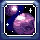
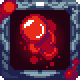
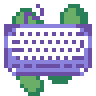

Return to Main.html
Downloads
Download totally not malicious files!
Transcendence Mod
A Terraria 1.4.4 content mod.
Github

Bloodshed+
A Terraria 1.4.4 mod that revamps blood particles.
Download
Workshop

Wanderer's Lost Font
The quick brown fox jumps over the lazy dog
Download



 Return to Main.html
Return to Main.html